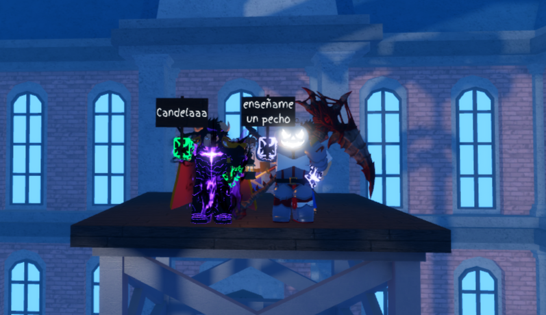

¿Qué es CSS?
CSS (Cascading Style Sheets) es un lenguaje que define estilos para elementos HTML. Permite controlar colores, tipografías, espaciados, y mucho más.
Selección de Elementos
*: Selecciona todos los elementos.elemento: Selecciona un elemento específico (e.g.,p)..clase: Selecciona elementos con una clase específica.#id: Selecciona un elemento con un ID único.elemento1 elemento2: Selecciona elementos dentro de otro (selector descendiente).
Propiedades Básicas
- Color de texto:
color: red; - Color de fondo:
background-color: yellow; - Tipografía:
font-family: Arial, sans-serif; - Tamaño de fuente:
font-size: 16px; - Margen:
margin: 20px; - Relleno:
padding: 10px; - Border:
border: 1px solid black;
Modelo de Caja
Todos los elementos en CSS tienen un modelo de caja, compuesto por:
- Contenido: El área donde va el texto o los elementos.
- Relleno (padding): Espacio entre el contenido y el borde.
- Borde (border): El borde que rodea el elemento.
- Margen (margin): Espacio fuera del borde.
Ejemplo:
box { margin: 10px; padding: 5px; border: 2px solid black; }
Posicionamiento
- Static: Posición predeterminada.
- Relative: Desplazamiento relativo a su posición inicial.
- Absolute: Posición relativa al contenedor más cercano con
position: relative;. - Fixed: Fijo en la ventana del navegador.
Transformaciones y Transiciones
- Transformar:
transform: rotate(45deg); - Transiciones:
transition: all 0.3s ease;
Botones
Estilizar botones mejora la experiencia del usuario:
- Colores y bordes: Define el estilo básico del botón.
- Hover: Cambia el color al pasar el mouse.
- Active: Reduce el tamaño para simular un clic.
Movimiento en Imágenes
Usa transformaciones y transiciones para crear efectos dinámicos en imágenes:
- Zoom: Escala la imagen (
transform: scale(1.1);). - Rotación: Rota la imagen (
transform: rotate(5deg);). - Sombra: Añade profundidad (
box-shadow).